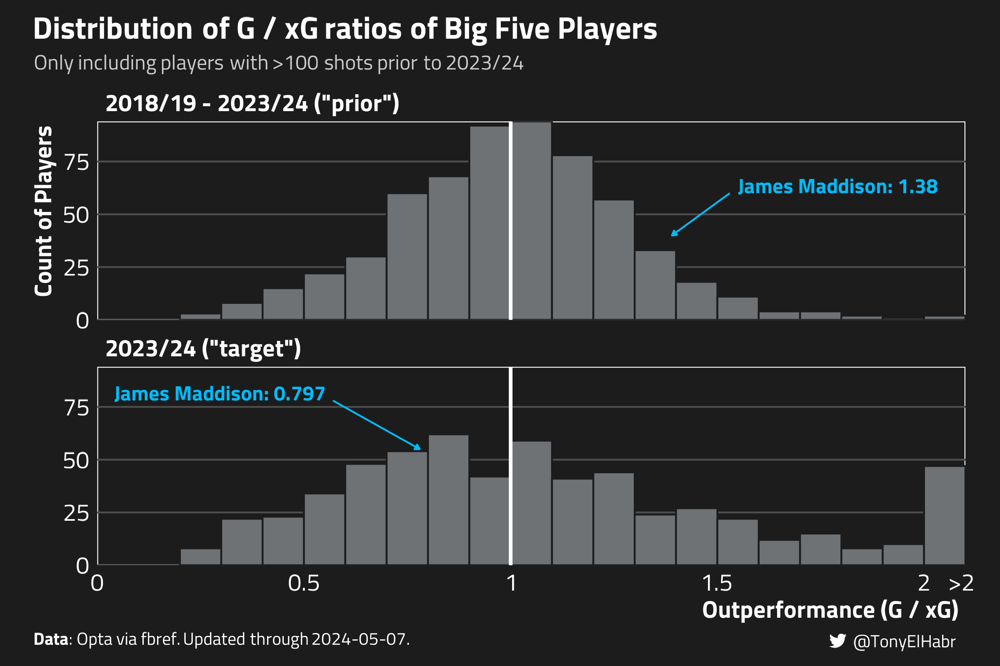
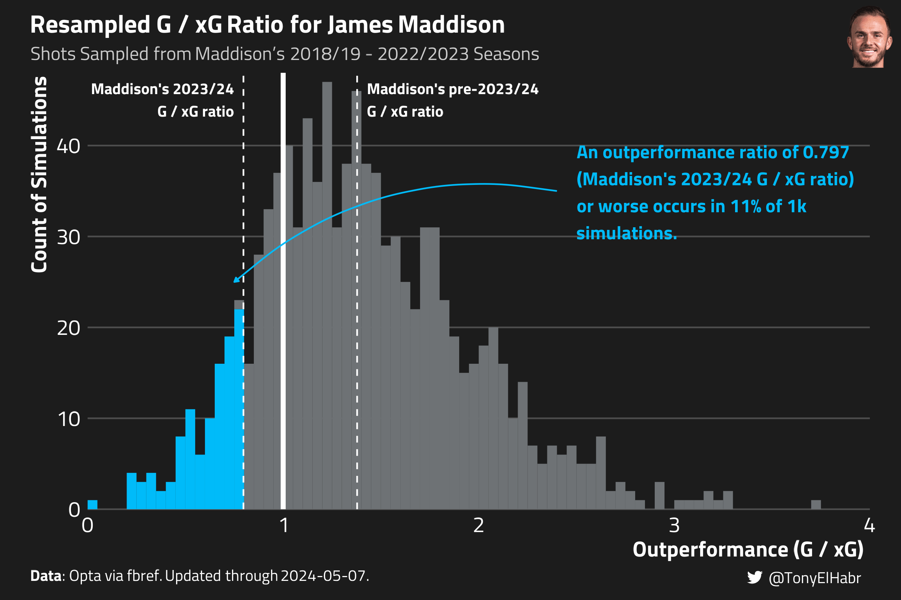

Quantifying how unlikely a player’s season-long shooting performance is, factoring in their prior shot history
Author
Tony ElHabr
Published
May 5, 2024
Introduction
Towards the end of each soccer season, we naturally start to look back at player stats, often looking to see who has performed worse compared to their past seasons. We may have different motivations for doing so–e.g. we may be trying to attribute team under-performance to individuals, we may be hypothesizing who is likely to be transferred or resigned, etc.
It’s not uncommon to ask “How unlikely was their shooting performance this season?” when looking at a player who has scored less than goals than expected.1 For instance, if a striker only scores 9 goals on 12 expected goals (xG), their “underperformance” of 3 goals jumps off the page.
The “Outperformance” (\(O_p\)) ratio–the ratio of a player \(p\)’s goals \(G_p\) to expected goals \(xG_p\)–is a common way of evaluating a player’s shooting performance.2
\[
O_p = \frac{G_p}{xG_p}
\]
An \(O_p\) ratio of 1 indicates that a player is scoring as many goals as expected; a ratio greater than 1 indicates underperformance; and a ratio less than 1 indicates overperformance. Our hypothetical player underperformed with \(O_p = \frac{8}{12} = 0.67\).
In most cases, we have prior seasons of data to use when evaluating a player’s \(O_p\) ratio for a given season. For example, let’s say our hypothetical player scored 14 goals on 10 xG (\(O_p = 1.4\)) in the season prior, and 12 goals on 8 xG (\(O_p = 1.5\)) before that. A \(O_p = 0.75\) after those seasons seems fairly unlikely, especially compared to an “average” player who theoretically achieves \(O_p = 1\) ratio every year.
So how do we put a number on the unlikeliness of that \(O_p = 0.75\) for our hypothetical player, accounting for their prior season-long performances?
Data
I’ll be using public data from FBref for the 2018/19 - 2023/24 seasons of the the Big Five European soccer leagues, updated through April 25. Fake data is nice for examples, but ultimately we want to test our methods on real data. Our intuition about the results can be a useful caliber of the sensibility of our results.
Get shot data
raw_shots <- worldfootballR::load_fb_match_shooting(country = COUNTRIES,tier = TIERS,gender = GENDERS,season_end_year = SEASON_END_YEARS)#> → Data last updated 2024-04-25 17:52:47 UTCnp_shots <- raw_shots |>## Drop penalties dplyr::filter(!dplyr::coalesce((Distance =='13'&round(as.double(xG), 2) ==0.79), FALSE) ) |> dplyr::transmute(season_end_year = Season_End_Year,player_id = Player_Href |>dirname() |>basename(),player = Player,match_date = lubridate::ymd(Date),match_id = MatchURL |>dirname() |>basename(),minute = Minute,g =as.integer(Outcome =='Goal'),xg =as.double(xG) ) |>## A handful of scored shots with empty xG dplyr::filter(!is.na(xg)) |> dplyr::arrange(season_end_year, player_id, match_date, minute)## Use the more commonly used name when a player ID is mapped to multiple names## (This "bug" happens because worldfootballR doesn't go back and re-scrape data## when fbref makes a name update.)player_name_mapping <- np_shots |> dplyr::count(player_id, player) |> dplyr::group_by(player_id) |> dplyr::slice_max(n, n =1, with_ties =FALSE) |> dplyr::ungroup() |> dplyr::distinct(player_id, player)player_season_np_shots <- np_shots |> dplyr::summarize(.by =c(player_id, season_end_year), shots = dplyr::n(), dplyr::across(c(g, xg), sum) ) |> dplyr::mutate(o = g / xg ) |> dplyr::left_join( player_name_mapping,by = dplyr::join_by(player_id) ) |> dplyr::relocate(player, .after = player_id) |> dplyr::arrange(player_id, season_end_year)player_season_np_shots#> # A tibble: 15,317 × 7#> player_id player season_end_year shots g xg o#> <chr> <chr> <int> <int> <int> <dbl> <dbl>#> 1 0000acda Marco Benassi 2018 70 5 4.01 1.25 #> 2 0000acda Marco Benassi 2019 59 7 5.61 1.25 #> 3 0000acda Marco Benassi 2020 20 1 1.01 0.990#> 4 0000acda Marco Benassi 2022 10 0 0.99 0 #> 5 0000acda Marco Benassi 2023 19 0 1.35 0 #> 6 000b3da6 Manuel Iturra 2018 2 0 0.41 0 #> 7 00242715 Moussa Niakhate 2018 16 0 1.43 0 #> 8 00242715 Moussa Niakhate 2019 10 1 1.5 0.667#> 9 00242715 Moussa Niakhate 2020 11 1 1.02 0.980#> 10 00242715 Moussa Niakhate 2021 9 2 1.56 1.28 #> # ℹ 15,307 more rows
For illustrative purposes, we’ll focus on one player in particular–James Maddison. Maddison has had a sub-par 2023/2024 season by his own standards, underperforming his xG for the first time since he started playing in the Premier League in 2018/19.
Maddison’s season-by-season data
player_season_np_shots |> dplyr::filter(player =='James Maddison')#> # A tibble: 6 × 7#> player_id player season_end_year shots g xg o#> <chr> <chr> <int> <int> <int> <dbl> <dbl>#> 1 ee38d9c5 James Maddison 2019 81 6 5.85 1.03 #> 2 ee38d9c5 James Maddison 2020 74 6 5.36 1.12 #> 3 ee38d9c5 James Maddison 2021 75 8 3.86 2.07 #> 4 ee38d9c5 James Maddison 2022 72 12 7.56 1.59 #> 5 ee38d9c5 James Maddison 2023 83 9 7.12 1.26 #> 6 ee38d9c5 James Maddison 2024 49 4 4.72 0.847
I’ll present 3 approaches to quantifying the “unlikelihood” of a player “underperforming” relative to their prior \(O_p\) history.3 I use “prior” to refer to an aggregate of pre-2023/24 statistics, and “target” to refer to 2023/24.

I’ll discuss some of the strengths and weaknesses of each approach as we go along, then summarize the findings in the end.
Approach 1: Weighted Percentile Rank
The first approach I’ll present is a handcrafted “ranking” method.
Calculate the proportional difference between the pre-target and target season outperformance ratios–\(O_{p,\text{target}'}\) and \(O_{p,\text{target}'}\) respectively–for all players \(P\).
Weight \(\delta O^w_p\) by the player’s \(xG_p\) accumulated in prior seasons.4
\[
\delta O^w_p = \delta O_p * xG_p
\]
Calculate the the underperforming unlikeliness \(U^-_p\) as a percentile rank of ascending \(\delta O^w_p\), i.e. more negative \(\delta O^w_p\) values correspond to a lower \(U^-_p\) percentile.5
This is pretty straightforward to calculate once you’ve got the data prepared in the right format.
maddison_u_approach1 |> dplyr::select(player, prior_o, target_o, u)#> # A tibble: 1 × 4#> player prior_o target_o u#> <chr> <dbl> <dbl> <dbl>#> 1 James Maddison 1.38 0.847 0.0321
This approach finds Maddison’s 2023/24 \(O_p\) of 0.847 to be about a 3rd percentile outcome. Among the 593 players evaluated, Maddison’s 2023/24 \(O_p\) ranks as the 20th most unlikely.
For context, here’s a look at the top 10 most unlikely outcomes for the 2023/24 season.
Ciro Immobile tops the list, with several other notable attacking players who had less than stellar seasons.
Overall, I’d say that this methodology seems to generate fairly reasonable results, but it’s hard to pinpoint why exactly this approach is defensible other than it may lead to intuitive results. Despite the intuitively appealing outcomes, it’s important to scrutinize key factors affecting this methodology’s robustness and validity.
Subjectivity in Weighting: The choice to weight the difference in performance ratios by pre-2023/24 xG is inherently subjective. While it’s important to have some form of weighting so as to avoid disproportionately emphasizing players with minimal shooting opportunities, lternative weighting strategies could lead to significantly different rankings.
Sensitivity to Player Pool: The percentile ranking of a player’s \(O_{p,\text{target}}\) unlikeliness is highly sensitive to the comparison group. For instance, comparing forwards to defenders could skew results due to generally higher variability in defenders’ goal-to-expected goals ratios. Moreover, if a season unusually favors players outperforming their expected goals, even average performers might appear as outliers. This potential for selection bias underlines the importance of carefully choosing the comparison pool.
Assumption of Uniform Distribution: The methodology assumes a uniform distribution of performance unlikeliness across players. We presume that there must be, for example, 1% of players at the 1st percentile of underperformance. Although this assumption may hold over many seasons, it could misrepresent individual seasons where extremes are less pronounced or absent.
Approach 2: Resampling from Prior History of Shots
There’s only so much you can do with player-season-level data. We need to dive into shot-level data if we want to more robustly understand the uncertainty of outcomes.
Here’s a “resampling” approach to quantify the underperforming unlikeliness \(U^-_p\) of a player in the target season:
Sample \(N_{p,\text{target}}\) shots (with replacement6) from a player’s past shots \(S_{p,\text{target}'}\). Repeat this for \(R\) resamples.7
Count the number of resamples \(r^-\) in which the outperformance ratio \(\hat{O}_{p,\text{target}'}\) of the sampled shots is less than or equal to the observed \(O_{p,\text{target}}\) in the target season for the player.8 The proportion \(U^-_p = \frac{r^-}{R}\) represents the unlikeness of a given player’s observed \(O_{p,\text{target}}\) (or worse) in the target season.
maddison_u_approach2 |> dplyr::select(player, prior_o, target_o, u)#> # A tibble: 1 × 4#> player prior_o target_o u#> <chr> <dbl> <dbl> <dbl>#> 1 James Maddison 1.38 0.847 0.163
The plot below should provide a bit of visual intuition as to what’s going on.

These results imply that Maddison’s 2023/24 \(G / xG\) ratio of 0.847 (or worse) occurs in 16.3% of simulations, i.e. a 16th percentile outcome. That’s a bit higher than what the first approach showed.
How can we feel more confident about this approach? Well, in the first approach, we assumed that the underperforming unlikelihood percentages should be uniform across all players, hence the percentile ranking. I think that’s a good assumption, so we should see if the same bears out with this second approach.
The plot below shows a histogram of the underperforming unlikelihood across all players, where each player’s estimated unlikelihood is grouped into a decile.
Approach 2 implementation for all players
all_resampled_o <- np_shots |>resample_player_o(players = all_players_to_evaluate$player ) |> dplyr::inner_join( wide_player_np_shots |>## to make sure we just one Rodri, Danilo, and Nicolás González dplyr::filter(player_id %in% all_players_to_evaluate$player_id) |> dplyr::select( player, prior_o, target_o, prior_shots, target_shots ),by = dplyr::join_by(player) ) |> dplyr::arrange(player, player)all_u_approach2 <- all_resampled_o |> dplyr::summarize(.by =c(player, prior_o, target_o, prior_shots, target_shots),u =sum(o <= target_o) /n() ) |> dplyr::arrange(u)
Indeed, the histogram shows a fairly uniform distribution, with a bit of irregularity at the very edges.
Looking at who is in the lower end of the leftmost decile, we see some of the same names–Immobile and Savanier–among the ten underperformers. (Withholding judgment on the superiority of any methodology, we can find some solace in seeing some of the same names among the most unlikely underperformers here as we did with approach 1.)
One familiar face in the printout above is Manchester City’s striker Erling Haaland, whose underperformance this season has been called among fans and the media. His sub-par performance this year ranked as a 7th percentile outcome by approach 1, which is very low, but not quite as low as what this approach finds.
Here are some parting thoughts on this methodology before we look at another:
Assumption of Shot Profile Consistency: We assume that a player’s past shot behavior accurately predicts their future performance. This generally holds unless a player changes their role or team, or is recovering from an injury. Deviations in these contexts need to be considered when applying this methodology.
Non-Parametric Nature: This method does not assume any specific distribution for a player’s performance ratios; instead, it relies on the stability of a player’s performance over time. The resampling process itself shapes the outcome distribution, which can vary significantly between players with different shooting behaviors, such as a forward versus a defender.
Computational Demands: The resampling approach requires relatively more computational resources than the prior approach, especially without parallel processing. Even a relatively small number of resamples, such as \(R=1000\), can take a few second per player to compute.
Approach 3: Evaluating a Player-Specific Cumulative Distribution Function (CDF)
If we assume that the set of goals-to-xG ratios come from a Gamma data-generating process, then we can leverage the properties of a player-level Gamma distribution to assess the unlikelihood of a players \(O_p\) ratio.
To calculate the underperforming unlikeliness \(U^-_p\):
Estimate a Gamma distribution \(\Gamma_{p,\text{target}'}\) to model a player’s true outperformance ratio \(O_{p}\) across all prior shots, excluding those in the target season–\(\hat{O}_{p,\text{target}'}\).
Calculate the probability that \(\hat{O}_{p,\text{target}'}\) is less than or equal to the player’s observed \(O_{p,\text{target}}\) in the target season using the Gamma distribution’s cumulative distribution function (CDF).
While that may sound daunting, I promise that it’s not (well, aside from a bit of “magic” in estimating a reasonable Gamma distribution per player).
maddison_u_approach3 |> dplyr::select(player, prior_o, target_o, u)#> # A tibble: 1 × 4#> player prior_o target_o u#> <chr> <dbl> <dbl> <dbl>#> 1 James Maddison 1.38 0.847 0.0679
We see that Maddison’s 2023/24 \(O_{p,\text{target}}\) ratio of 0.847 (or worse) is about a 7th percentile outcome given his prior shot history. The 7th percentile outcome estimated is about not far from the 3rd percentile outcome estimated with approach 1.
To gain some intuition around this approach, we can plot out the Gamma distributed estimate of Maddison’s \(O_p\). The result is a histogram that looks not all that dissimilar to the one from before with resampled shots, just much smoother (since this is a “parametric” approach).
As with approach 2, we should check to see what the distribution of underperforming unlikeliness looks like–we should expect to see a somewhat uniform distribution.
This histogram has a bit more distortion than our resampling approach, so perhaps it’s a little less calibrated.
Looking at the top 10 strongest underperformers, 3 of the names here–Immobile, Savanier, and Sanabria–are shared with approach 2’s top 10, and 7 are shared with approach 1’s top 10.
We can visually check the consistency of the results from this method with the prior two with scatter plots of the estimated underperforming unlikeliness from each.
If two of the approaches were perfectly in agreement, then each point, representing one of the 593 evaluated players, would fall along the 45-degree slope 1 line.
With that in mind, we can see that approach 3 is slightly more precise in relation to approach 1, but approach 3 tends to assign slightly higher percentiles to players on the whole. The results from approaches 2 and 3 also have a fair degree of agreement, and the results are more uniformly calibrated.
Stepping back from the results, what can we say about the principles of the methodology?
Parametric Nature: The reliance on a Gamma distribution for modeling a player’s performance is both a strength and a limitation. The Gamma distribution is apt for positive, skewed continuous variables, making it suitable for modeling goals-to-xG ratios. However, the dependency on a single distribution type may restrict the scope of analysis.
Sensitivity to Distribution Parameters: The outcomes of this methodology are highly sensitive to the parameters defining each player’s Gamma distribution. Small adjustments in shape or rate parameters can significantly alter the distribution, causing substantial shifts in the percentile outcomes of player performances. This sensitivity underscores the need for careful parameter selection and calibration.
Flexibility of the Model: Despite its sensitivity, the Gamma distribution offers considerable flexibility. It allows for fine-tuning of the model to better fit the data, which can be advantageous for capturing the nuances of different players’ shot profiles.
Conclusion
Here’s a summary of the pros and cons of each approach, along with the result for Maddison.
Approach
Description
Pros
Cons
Maddison 2023/24 Underperformance Unlikeliness
1
Percentile Ranking
customizable
subjective, sensitive to the choice of player pool
3rd percentile
2
Resampling
non-parametric
(relatively) computationally intensive
16th percentile
3
Cumulative Distribution Function (CDF)
flexible
sensitive to choice of distribution parameters
7th percentile
I personally prefer either the second or third approach. In practice, perhaps the best thing to do is take an ensemble average of each approach, as they each have their pros and cons.
Appendix
Approach 0: \(t\)-test
If you have some background in statistics, applying a \(t\)-test (using shot-weighted averages and standard deviations) may be an approach that comes to mind.
Approach 0
u_approach0 <- player_season_np_shots |> dplyr::semi_join( all_players_to_evaluate |> dplyr::select(player_id),by = dplyr::join_by(player_id) ) |> dplyr::filter(season_end_year < TARGET_SEASON_END_YEAR) |> dplyr::summarise(.by =c(player),mean =weighted.mean(o, w = shots),## could also use a function like Hmisc::wtd.var for weighted variancesd =sqrt(sum(shots * (o -weighted.mean(o, w = shots))^2) /sum(shots)) ) |> dplyr::inner_join( wide_player_np_shots |> dplyr::select(player, prior_o, target_o),by = dplyr::join_by(player) ) |> dplyr::mutate(z_score = (target_o - mean) / sd,## multiply by 2 for a two-sided t-testu =pnorm(-abs(z_score)) ) |> dplyr::select(-c(mean, sd)) |> dplyr::arrange(player)
In reality, this isn’t giving us a percentage of unlikelihood of the outcome. Rather, the p-value measures the probability of underformance as extreme as the underperformance observed in 2023/24 if the null hypothesis is true. The null hypothesis in this case would be that there is no significant difference between the player’s actual \(O_p\) ratio in the 2023/24 season and the distribution of outperformance ratios observed in previous seasons.
No matching items
Footnotes
I’ll only consider non-penalty xG and goals for this post. The ability to score penalties at a high success rate is generally seen as a different skill set than the ability to score goals in open play.↩︎
The raw difference between goals and xG is a reasonable measure of shooting performance, but it can “hide” shot volume. Is it fair to compare a player who takes 100 shots in a year and scores 12 goals on 10 xG with a player who takes 10 shots and scores 3 goals on 1 xG? The raw difference is +2 in both cases, indicating no difference in the shooting performance for the two players. But \(O_p\), as defined here, would be 1.2 and 3 respectively, hinting at the former player’s small sample size.↩︎
While I focus on underperformance in this post, “overperformance” could be quantified in a similar (i.e. symmetrical) manner with each technique.↩︎
The weighting here is to reflect the intuition that players who have taken a lot of shots in the past and have an uncharacteristic season are shown as more unlikely than a player with only one prior season of shots, who happens to have a very different goals-to-expected goals ratio in the latter season.↩︎
An overperforming unlikelihood \(U^+_p\) could be calculated by sorting \(\delta O^w_p\) in descending order instead.↩︎
Sampling without replacement is also reasonable. However, some players wouldn’t have enough shots from prior seasons to match their volume of shots in 2023/24.↩︎
\(N_p\) should be set equal to the number of shots a player has taken in the target season, i.e. 2023/24 here. \(M\) should be set to some fairly large number, so as to achieve stability in the results. I set it to 1,000.↩︎
Similarly, to estimate the unlikeness of an overperforming season, count up in how many simulations \(r^+\) the outperformance ratio of the resampled shots is greater than \(O_{p,\text{target}}\) and calculate the proportion \(U^+_p = \frac{r^+}{R}\).↩︎